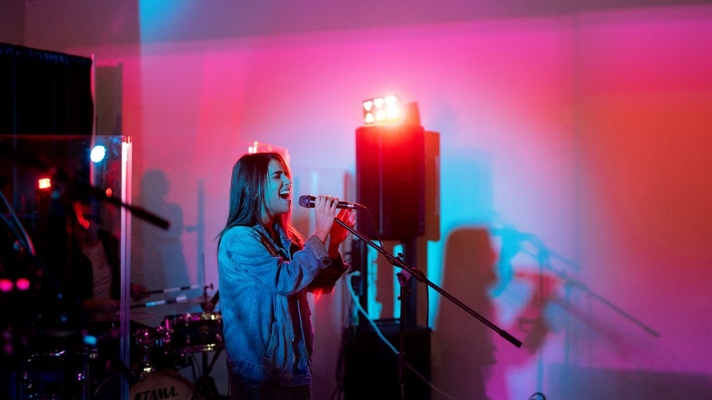

Live band karaoke
The band plays the hits. Your people take the mic when they’re ready.
There’s always someone at the office who has secretly been waiting their whole life to sing Livin’ on a Prayer with a real band behind them. Live band karaoke gives them that chance. Our band plays 80s and 90s hits as a party band, then hands the mic to anyone who wants a turn. The words are up on screens for both the singer and the crowd, a host keeps things moving, and the band follows whoever is singing.
If you want your team letting loose together at the company party, this is the one to book.
We can build the band around your event, from the number of musicians to the song list and what they wear. Here’s how booking through Signet works.

Trusted and booked by
Song list
What songs does a live karaoke band play?
The song list starts in the 80s and 90s and comes forward from there, because those are the songs almost everyone at the party can sing without looking at the screen. We’re talking Journey, Bon Jovi, Whitney Houston, Prince, Madonna, Queen, Oasis, No Doubt, Alanis Morissette, TLC, the Backstreet Boys, Outkast and the Killers, just to name a few.
Between singers, the band keeps playing the same hits as a party band, so the dance floor stays active. Have a song in mind for someone special, like your CEO’s karaoke song or a retiring colleague’s favorite? Just let us know ahead of time, and if it isn’t on the song list, we can usually learn it.
Song list
A sample of songs


- Don't Stop Believin'Journey
- Mr. BrightsideThe Killers
- Livin' on a PrayerBon Jovi
- I Wanna Dance with SomebodyWhitney Houston
- Sweet CarolineNeil Diamond
- WonderwallOasis
- Total Eclipse of the HeartBonnie Tyler
- Girls Just Want to Have FunCyndi Lauper
- Summer of '69Bryan Adams
- Like a PrayerMadonna
- Billie JeanMichael Jackson
- What's Up4 Non Blondes
- All the Small ThingsBlink-182
- ValerieMark Ronson & Amy Winehouse
- I Will SurviveGloria Gaynor
- Dancing QueenABBA
- Shut Up and DanceWalk the Moon
- Pink Pony ClubChappell Roan
- UmbrellaRihanna
- Bohemian RhapsodyQueen
- You Shook Me All Night LongAC/DC
- Everybody (Backstreet's Back)Backstreet Boys
- ...Baby One More TimeBritney Spears
- Shake It OffTaylor Swift
- Lose YourselfEminem
Sizes
How big is a live karaoke band?
- The four-piece
- You get a singer on guitar, plus keys, bass and drums, and one of the musicians hosts from the stage. It’s the usual size for a company party of eighty to two hundred.
- Five to six piece
- This is the four-piece plus a horn or a second singer, along with a dedicated host out on the floor. It’s a great size for a ballroom, a conference after-party or a crowd of more than two hundred. A second singer can help get the first guests up there, and the choruses sound bigger.
Want to keep the party going after the band wraps up? Our DJ can take over on the same sound system, on the same contract.
Occasions
Perfect booking for
- Office holiday parties
- Live band karaoke is a fun way to shake up the office holiday party, because you get a great party band and anyone who wants a turn in the spotlight can have one. Still weighing your options? Check out our office holiday party ideas in Denver.
- Sales kickoffs and team offsites
- After a long day of sessions, live band karaoke gives your team a chance to loosen up and make some noise together, in Denver or on a mountain retreat.
- After-parties
- We can pick up right after a conference dinner or a gala program, and the band can use the sound system that’s already set up in the ballroom.
- Weddings
- Live band karaoke is a great way to spend the last hour of a reception or the welcome party the night before, especially if your friends love to sing.
- Milestone birthdays and parties at home
- We love a fortieth or fiftieth birthday with a crowd that grew up on these songs, and it’s a blast at a Halloween party in costume or a holiday party at home, as long as you have a big main floor.
Venues
We’d pick Live Band Karaoke for live music at these venues.

Colorado Springs
Cheyenne Mountain Resort
The Centennial, Colorado and Remingtons ballrooms and the beach on the resort’s private lake.
Acts we'd pickClassical Strings · Tejas Singh · Little Moses Jones
Live music at Cheyenne Mountain Resort
Downtown Denver
Grand Hyatt Denver
The Pinnacle Club on the 38th floor, the Colorado Ballroom and the Aspen Ballroom.
Acts we'd pickJazz Duo · Little Moses Jones · Quadrasonic
Live music at Grand Hyatt Denver
Downtown Denver
Hilton Denver City Center
The Colorado, Denver and Penrose ballrooms and an outdoor plaza.
Acts we'd pickLittle Moses Jones · Soul and R&B Band · Jazz Duo
Live music at Hilton Denver City Center
Broomfield, between Denver and Boulder
Omni Interlocken Hotel
The Interlocken and Centennial ballrooms, Ponderosa, the Outdoor Pavilion and the ceremony lawn.
Acts we'd pickClassical Strings · Dirty Flamenco · Little Moses Jones
Live music at Omni Interlocken
Westminster, between Denver and Boulder
The Westin Westminster
The Westminster, Legacy and Standley ballrooms, the Waterfall Gardens, the Lake House and the Sunset Rooftop Deck.
Acts we'd pickClassical Strings · Little Moses Jones · Quadrasonic
Live music at the Westin Westminster
Live band karaoke questions
Have another question? Our full question list covers everything from substitutions to volume limits.
Does anyone have to sing?
How does a guest get on the list?
How is this different from a karaoke DJ?
How many people get a turn?
Who decides what's appropriate?
How loud is it?
Can we use the microphone for remarks or a raffle?
Ready to hand your team the mic? Send us the date and the headcount.
We’ll reply with availability and costs, and one person on our team will stay in touch with you all the way through.
Want photos or video of your event? Add them to your booking.